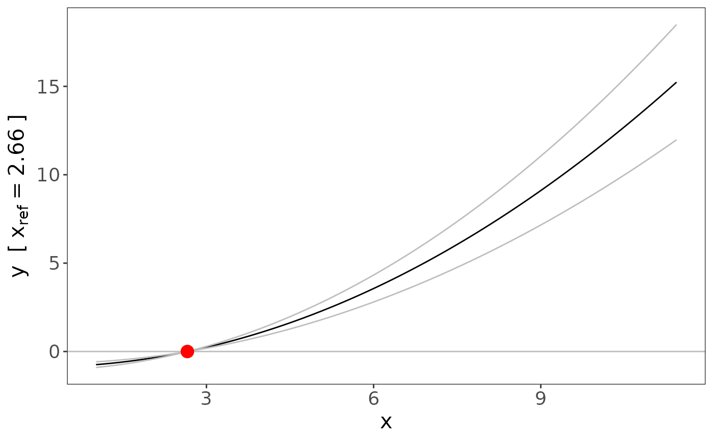

fracpoly_mr performs a Mendelian randomization (MR)
analysis by fitting fractional polynomial models to localised
average causal effects using meta-regression.
Usage
fracpoly_mr(
y,
x,
g,
covar = NULL,
family = "gaussian",
q = 10,
xpos = "mean",
method = "FE",
d = 1,
pd = 0.05,
ci = "model_se",
nboot = 100,
fig = FALSE,
ref = mean(x),
pref_x = "x",
pref_x_ref = "x",
pref_y = "y",
ci_type = "overall",
ci_quantiles = 10,
breaks = NULL
)Arguments
- y
vector of outcome values
- x
vector of exposure values
- g
the instrumental variable
- covar
data.frameof covariates- family
a description of the error distribution and link function to be used in the model and is a
characterstring naming either the gaussian (i.e."gaussian"for continuous data) or binomial (i.e."binomial"for binary data) family function (default:"gaussian")- q
the number of quantiles the exposure distribution is to be split into within which a causal effect will be fitted, known as localised average causal effects (LACE) (default:
10)- xpos
the position used to relate
xto the localised average causal effect, this can either be the mean of the x-values within each quantile or a percentile (e.g. 0.5 corresponds to the median value) (default:"mean")- method
meta-regression method parsed to the
metaforpackage, e.g. the fixed-effects model (default:"FE")- d
fractional polynomial degree, the options are:
1,2, or"both"(default:1)- pd
p-value cut-off for choosing the best-fitting fractional polynomial of degree 2 over the best-fitting fractional polynomial degree 1, used only if
d = "both"(default:0.05)- ci
the type of 95% confidence interval, there are three options: (i) using the model standard errors (
"model_se"), (ii) using bootstrap standard errors ("bootstrap_se"), and (iii) using bootstrap percentile confidence intervals ("bootstrap_per") (default:"model_se")- nboot
the number of bootstrap replications (default:
100)- fig
a
logicalstatement as to whether the user wants the results displayed in a figure (default:FALSE)- ref
the reference point for the figure, this is the value of the function that represents the expected difference in the outcome compared with this reference value when the exposure is set to different values (default:
mean(x))- pref_x
the prefix/label for the x-axis (default:
"x")- pref_x_ref
the prefix for the reference value displayed on the y-axis (default:
"x")- pref_y
the prefix/label for the y-axis (default:
"y")- ci_type
the type of confidence interval to be displayed on the graph, where confidence intervals are either presented as bands across the range of x (option:
"overall") or as error bars at the mean in each quantile of x (option:"quantile") (default:)- ci_quantiles
the number of quantiles at which confidence intervals are to be displayed (default:
10)- breaks
breaks on the y-axis of the figure
Value
fracpoly_mr returns a list of non-linear MR results from the
fractional polynomial MR approach:
- n
number of individuals
- model
the model specifications: number of quantiles (
q), position used to relate x to the LACE in each quantiles (xpos), type of confidence interval constructed (ci), number of bootstrap replications performed (nboot)- powers
the powers of the chosen polynomial
- coefficients
the regression estimates: regression coefficients (
beta), standard errors of regression coefficients (se), lower 95% confidence interval (lci), upper 95% confidence interval (uci), p-value (pval)- lace
the localised average causal effect estimate in each quantile: regression coefficients (
beta), standard errors of regression coefficients (se), lower 95% confidence interval (lci), upper 95% confidence interval (uci), p-value (pval)- xcoef
the association between the instrument and the exposure in each quantile: regression coefficients (
beta), standard errors of regression coefficients (se)- p_tests
the p-value of the non-linearity tests: p-value of the test between the fractional polynomial degrees (
fp_d1_d2), p-value from the fractional polynomial non-linearity test (fp), p-value from the quadratic test (quad), p-value from the Cochran Q test (Q)- p_heterogeneity
the p-value of heterogeneity: p-value of the Cochran Q heterogeneity test (
Q), p-value from the trend test (trend).
Author
James Staley jrstaley95@gmail.com
Examples
# IV (g), exposure (x) & outcome (y)
epsx <- rexp(10000)
u <- runif(10000, 0, 1)
g <- rbinom(10000, 2, 0.3)
epsy <- rnorm(10000)
ag <- 0.25
x <- 1 + ag * g + u + epsx
y <- 0.15 * x^2 + 0.8 * u + epsy
# Covariates (covar)
c1 <- rnorm(10000)
c2 <- rnorm(10000)
c3 <- rbinom(10000, 2, 0.33)
covar <- data.frame(c1 = c1, c2 = c2, c3 = as.factor(c3))
# Analyses
fp <- fracpoly_mr(
y = y, x = x, g = g, covar = covar,
family = "gaussian", q = 10, d = 1, ci = "model_se",
fig = TRUE
)
summary(fp)
#> Call: fracpoly_mr
#>
#> Number of individuals: 10000; Quantiles: 10; 95%CI: Model based SEs
#>
#> Powers: 2
#>
#> Coefficients:
#> Estimate Std. Error 95%CI Lower 95%CI Upper p.value
#> 2 0.155459 0.012415 0.131125 0.1798 < 2.2e-16 ***
#> ---
#> Signif. codes: 0 ‘***’ 0.001 ‘**’ 0.01 ‘*’ 0.05 ‘.’ 0.1 ‘ ’ 1
#>
#> Non-linearity tests
#> Fractional polynomial degree p-value: 0.429
#> Fractional polynomial non-linearity p-value: 0.000229
#> Quadratic p-value: 0.000229
#> Cochran Q p-value: 0.0302
#>
#> Heterogeneity tests
#> Cochran Q p-value: 0.163
#> Trend p-value: 0.843

plm <- piecewise_mr(
y = y, x = x, g = g, covar = covar,
family = "gaussian", q = 10, nboot = 100,
fig = TRUE
)
summary(plm)
#> Call: piecewise_mr
#>
#> Number of individuals: 10000; Quantiles: 10; Number of bootstrap replications: 100
#>
#> LACE:
#> Estimate Std. Error 95%CI Lower 95%CI Upper p.value
#> 1 0.3564942 0.1852502 -0.0065962 0.7196 0.0543053 .
#> 2 0.4609338 0.1922158 0.0841907 0.8377 0.0164848 *
#> 3 0.6045264 0.1926165 0.2269981 0.9821 0.0016982 **
#> 4 0.5419209 0.1923325 0.1649492 0.9189 0.0048380 **
#> 5 0.9319576 0.1951627 0.5494386 1.3145 1.795e-06 ***
#> 6 0.6857029 0.2000006 0.2937018 1.0777 0.0006069 ***
#> 7 1.0459115 0.1877702 0.6778820 1.4139 2.545e-08 ***
#> 8 1.1100591 0.1976915 0.7225838 1.4975 1.964e-08 ***
#> 9 1.0095193 0.1874190 0.6421780 1.3769 7.187e-08 ***
#> 10 1.2326439 0.4274937 0.3947562 2.0705 0.0039338 **
#> ---
#> Signif. codes: 0 ‘***’ 0.001 ‘**’ 0.01 ‘*’ 0.05 ‘.’ 0.1 ‘ ’ 1
#>
#> Non-linearity tests
#> Quadratic p-value: 0.000229
#> Cochran Q p-value: 0.0302
#>
#> Heterogeneity tests
#> Cochran Q p-value: 0.163
#> Trend p-value: 0.919